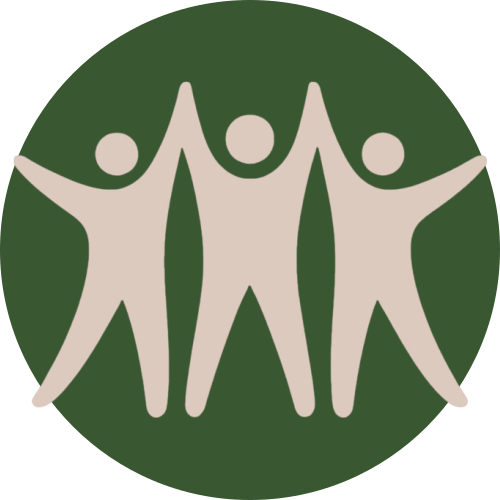

Aala
Co-fondatoredescrizione breve su di lui

VolontarIO mette in contatto persone che vogliono dare una mano con chi ha bisogno di supporto nelle attività quotidiane. Un modo semplice, umano e gratuito per costruire una comunità più solidale.
VolontarIO è molto più di una semplice piattaforma: è un movimento. Crediamo che le comunità forti siano costruite su persone che aiutano altre persone, e siamo qui per rendere questa connessione semplice e significativa.
Fondata nel 2025, la nostra missione è creare un mondo in cui aiutare il proprio vicino sia naturale quanto dire ciao. Che si tratti di preparare un pasto per qualcuno, tagliare l'erba o dare una mano con la spesa, ogni piccolo atto di gentilezza rafforza i legami della nostra comunità.
Siamo un team volenteroso dedicato che si impegna a costruire una piattaforma che connette persone e crea comunità più forti attraverso il volontariato.
descrizione breve su di lui
descrizione breve su di lei
descrizione breve su di lei
descrizione breve su di lui